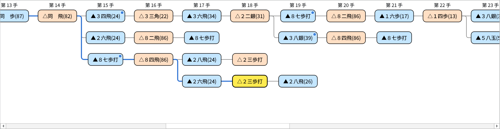
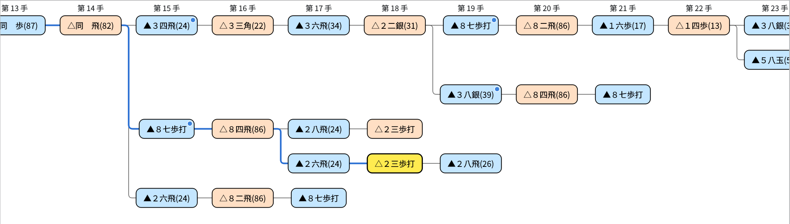
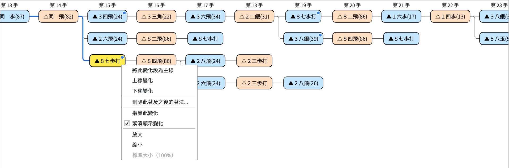
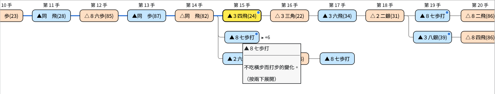
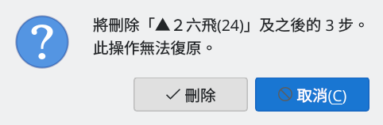
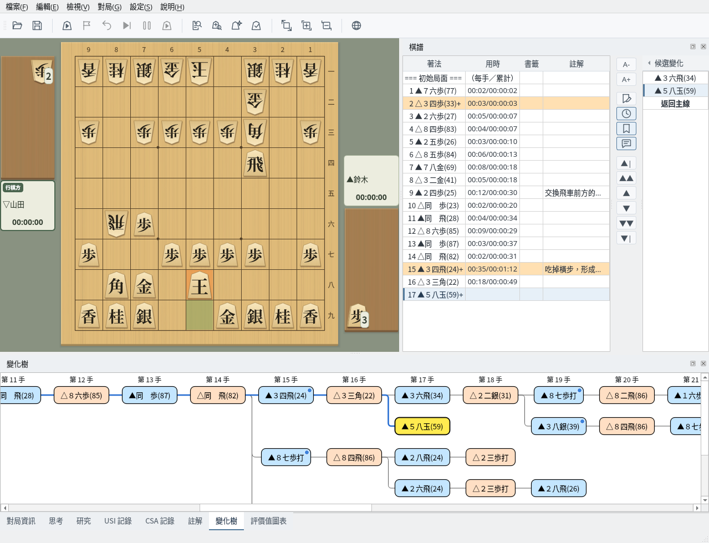

變化樹
一覽主線與變化的著法，並可透過右鍵選單整理和編輯
截圖於 Linux 上以繁體中文介面擷取。
變化樹的檢視方式
依手數對齊排列主線和變化的著法
選擇畫面下方的「變化樹」分頁即可顯示。從左端的「初始局面」開始，最上面一列是主線，其下是變化，依手數對齊排列。除了讀取棋譜時，對局中走的著法也會立即加入。面板的位置也可以調整（參閱停駐面板）。棋譜欄和候選變化的用法請參閱棋譜顯示。
- 藍框是先手的著法，橘框是後手的著法。
- 黃色的著法是目前棋盤上顯示的著法，與棋譜欄和註解中的著法相同。
- 從初始局面到黃色著法的路徑以藍色粗線顯示。
- 從同一著分出的變化以直線相連。
- 有註解的著法右上角帶有藍色圓點。滑鼠停在著法上會顯示該著法和註解的開頭部分。
- 上方的「第 n 手」標題在垂直捲動時也會一直顯示在上端。
黃色的著法在畫面之外時，會自動捲動到能看到它的位置。


變化樹：正在顯示變化中的變化（第 18 手）。從初始局面開始的路徑以藍線顯示，有註解的著法帶藍色圓點
變化會緊湊地排列在分出它的著法下方的空列中。同一列排列不同的變化時，會空出一手的間隔，以免看起來像連續的著法。
在右鍵選單中取消「緊湊顯示變化」，則每個變化各占一列，並依變化的順序排列。此設定會保留到下次。


取消「緊湊顯示變化」後的顯示（與上圖為同一棋譜）
移動與顯示操作
以點擊和按鍵移動局面，並可調整顯示大小
按一下著法即可移動到該局面，棋盤、棋譜欄和候選變化也會切換到同一著。按一下變化樹後，還可以用以下按鍵移動。
| 按鍵 | 作用 |
|---|---|
| ← / → | 移動到同一變化的前一著或後一著（在初始局面按 → 移動到主線第 1 手） |
| ↑ / ↓ | 移動到同一手數中緊鄰的上一列或下一列的著法 |
| Home | 移動到初始局面 |
| End | 移動到該變化的最後一手 |
對局中、棋譜分析中和局面編輯中無法選擇或編輯著法，但摺疊、放大縮小等顯示操作仍可使用。
可用 Ctrl＋滾輪（macOS 為 ⌘＋滾輪）、觸控板雙指縮放，或右鍵選單的「放大」「縮小」，在 50%～200% 之間調整顯示大小（滾輪和選單每次 10%）。選擇「標準大小（100%）」可恢復原來的大小。顯示大小會保留到下次。
在變化樹中按右鍵，會依按下的位置顯示以下項目。
| 選單 | 顯示條件 | 作用 |
|---|---|---|
| 將此變化設為主線／上移變化／下移變化／刪除此著及之後的著法… | 在初始局面以外的著法上按右鍵時（對局中、棋譜分析中和局面編輯中除外） | 編輯變化（參閱編輯變化） |
| 摺疊此變化／展開此變化 | 在主線以外的變化中的著法上按右鍵時（有 2 手以上的變化，或其後還有分出的變化） | 隱藏或顯示變化的後續著法（參閱摺疊變化） |
| 展開所有變化 | 有已摺疊的變化時 | 將已摺疊的變化全部展開 |
| 緊湊顯示變化 | 隨時 | 切換是否將變化緊湊地排列在空列中 |
| 放大／縮小／標準大小（100%） | 隨時 | 調整顯示大小 |


在變化中的著法（第 15 手的▲８七歩打）上按右鍵
摺疊變化
隱藏較長的變化，方便檢視想看的著法
在變化中的著法上按右鍵並選擇「摺疊此變化」，只保留該變化的第一手，隱藏後續著法和從中分出的變化。第一手變為虛線框，右側以「▸ +n」顯示被隱藏的手數。滑鼠停在上面會顯示「（按兩下展開）」。
要恢復時，按兩下第一手，或按右鍵並選擇「展開此變化」。有已摺疊的變化時，可用右鍵選單的「展開所有變化」一次全部展開。
從棋譜欄或候選變化移動到被隱藏的著法時，會自動展開。目前顯示的著法被隱藏時，已摺疊變化的第一手會變成黃色。


摺疊第 15 手▲８七歩打的變化後的顯示（隱藏了後續著法和其後的變化共 6 手）
編輯變化
透過右鍵選單設為主線、調整變化順序或刪除著法
在變化樹中的著法，或棋譜欄右側「候選變化」中的著法上按右鍵，可以進行以下操作。無法使用的操作會顯示為灰色。編輯後棋譜會變為未儲存狀態，請視需要儲存。
| 選單 | 作用 |
|---|---|
| 將此變化設為主線 | 將從初始局面到該著的著法設為主線。該著之後，接續的著法（最上面的變化）直接成為主線。主線上的著法無法使用。 |
| 上移變化／下移變化 | 將包含該著的變化，在從同一著分出的變化中上移或下移一位。最上面的變化是該分支點的主線一側。候選變化的排列順序和儲存時變化的順序也會改變。 |
| 刪除此著及之後的著法… | 刪除該著、其後續著法以及從中分出的變化。確認要刪除的手數後按「刪除」即可刪除（無法復原）。目前顯示的著法被刪除時，會移動到被刪除著法的前一著。 |


刪除確認：顯示要刪除的手數
在棋盤上走子新增變化
不在對局時在棋盤上走的著法會記錄到棋譜中
在沒有進行對局、棋譜分析、研究或局面編輯時，在棋盤上移動棋子，這一著會作為目前著法的下一著記錄到棋譜中。
- 還沒有下一著時：成為該變化的後續著法
- 已有相同的著法時：只移動到該著
- 不同的著法時：成為新的變化，並顯示在候選變化和變化樹中
升變與否會進行確認。顯示認輸等終局著法時，視為從其前一個局面走出的著法。剛啟動等棋譜為空時，也會從目前顯示的局面開始記錄。記錄新的著法後，棋譜會變為未儲存狀態。


顯示第 16 手後走▲５八玉：成為第 17 手的新變化，顯示在候選變化和變化樹中